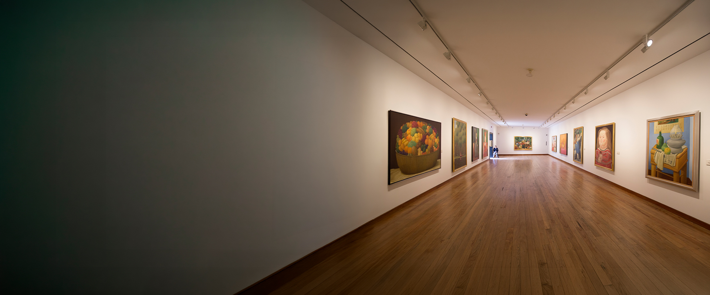
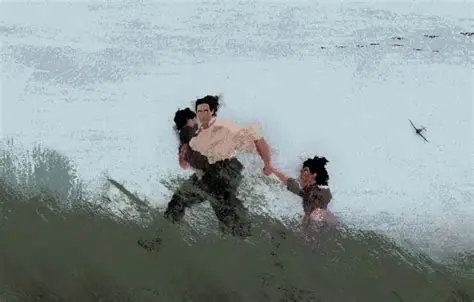

Catálogo Cultural

Las mujeres del Huila, intérpretes de instrumentos de viento.
Esta charla analiza el papel de las mujeres en el trombón y el clarinete, instrumentos tradicionalmente masculinizados. A través de vivencias y trayectorias, se exploran los retos y logros de las intérpretes que, mediante la resistencia artística, han transformado la escena musical desde una perspectiva de género.

Exposición permanente del museo de Botero
Fundado en el año 2000 con la donación de Fernando Botero, el museo alberga 208 obras que integran tanto la producción del artista como piezas de referentes de la talla de Picasso y Dalí.

Museo del Oro
Este espacio del Banco de la República presenta una de las colecciones arqueológicas más importantes del mundo. A través de cuatro salas permanentes, ofrece un recorrido histórico por la orfebrería, cerámica y tallado en madera y piedra de las sociedades prehispánicas en Colombia.

Junio de cine
Película Popel | Centro Niemeyer Documental sobre František Suchý y su hijo, quienes rescataron del olvido las cenizas de miles de víctimas del nazismo en Praga. Una investigación profunda premiada por Días de Cine (RTVE) y el Festival de Pessac. Una cita imprescindible con la memoria y la dignidad histórica.